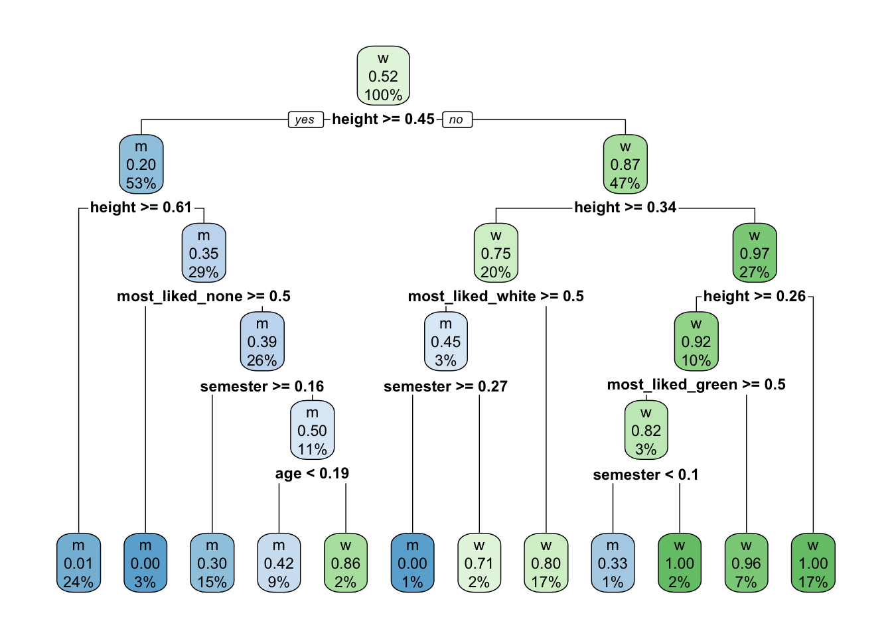
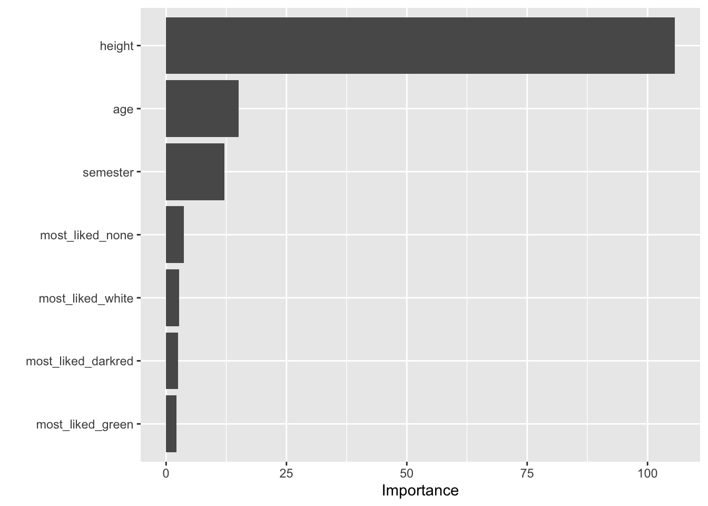
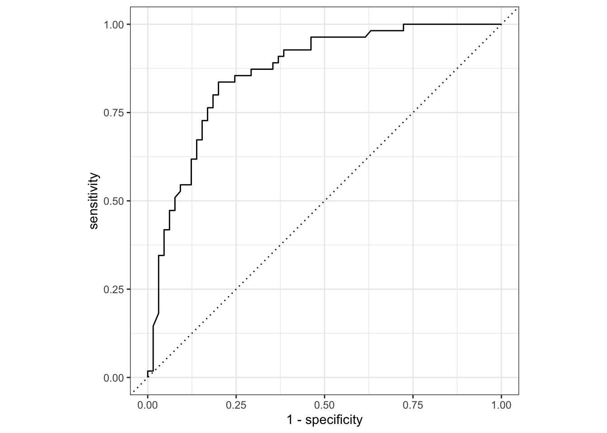

53 Random Forest
Version vom November 25, 2022 um 15:36:58


Wir werden uns hier mit der Anwendung beschäftigen. Wie immer lassen wir daher tiefere mathematische Überlegungen weg.
53.1 Genutzte R Pakete für das Kapitel
Wir wollen folgende R Pakete in diesem Kapitel nutzen.
pacman::p_load(tidyverse, tidymodels, magrittr,
janitor, vip, rpart.plot,
conflicted)
conflict_prefer("select", "dplyr")
conflict_prefer("filter", "dplyr")
conflict_prefer("mutate", "dplyr")
conflict_prefer("extract", "magrittr")Am Ende des Kapitels findest du nochmal den gesamten R Code in einem Rutsch zum selber durchführen oder aber kopieren.
53.2 Daten
gummi_tbl <- read_excel("data/gummibears.xlsx") %>%
mutate(gender = as_factor(gender),
most_liked = as_factor(most_liked),
student_id = 1:n()) %>%
select(student_id, gender, most_liked, age, semester, height) In Tabelle 51.5
| student_id | gender | most_liked | age | semester | height |
|---|---|---|---|---|---|
| 1 | m | lightred | 35 | 10 | 193 |
| 2 | w | yellow | 21 | 6 | 159 |
| 3 | w | white | 21 | 6 | 159 |
| 4 | w | white | 36 | 10 | 180 |
| 5 | m | white | 22 | 3 | 180 |
| 6 | m | white | NA | NA | NA |
| … | … | … | … | … | … |
| 490 | w | darkred | 26 | 1 | 170 |
| 491 | w | yellow | 19 | 1 | 164 |
| 492 | w | darkred | 22 | 1 | 165 |
| 493 | m | orange | 21 | 1 | 186 |
| 494 | m | green | 25 | 3 | 193 |
| 495 | m | lightred | 25 | 3 | 194 |
gummi_data_split <- initial_split(gummi_tbl, prop = 3/4)
gummi_train_data <- training(gummi_data_split)
gummi_test_data <- testing(gummi_data_split)gummi_rec <- recipe(gender ~ ., data = gummi_train_data) %>%
update_role(student_id, new_role = "ID") %>%
step_naomit(all_outcomes()) %>%
step_impute_mean(all_numeric_predictors(), -has_role("ID")) %>%
step_impute_bag(all_nominal_predictors(), -has_role("ID")) %>%
step_range(all_numeric_predictors(), min = 0, max = 1, -has_role("ID")) %>%
step_dummy(all_nominal_predictors(), -has_role("ID")) %>%
step_nzv(all_predictors(), -has_role("ID"))
gummi_rec %>% summary()# A tibble: 6 × 4
variable type role source
<chr> <list> <chr> <chr>
1 student_id <chr [2]> ID original
2 most_liked <chr [3]> predictor original
3 age <chr [2]> predictor original
4 semester <chr [2]> predictor original
5 height <chr [2]> predictor original
6 gender <chr [3]> outcome original53.3 Rpart
Mit Abbildung
https://www.tidymodels.org/start/tuning/
rpart_mod <- decision_tree(tree_depth = 5, min_n = 10, cost_complexity = 0.001) %>%
set_engine("rpart") %>%
set_mode("classification")rpart_wflow <- workflow() %>%
add_model(rpart_mod) %>%
add_recipe(gummi_rec)rpart_fit <- rpart_wflow %>%
parsnip::fit(gummi_train_data)rpart_aug <- augment(rpart_fit, gummi_test_data ) rpart_aug %>%
roc_curve(gender, .pred_w, event_level = "second") %>%
autoplot()
rpart_fit %>%
extract_fit_engine() %>%
rpart.plot(roundint = FALSE)
53.4 Random Forest


Das Wort Bagging steht für bootstrap aggregating und ist eine Methode, um Vorhersagen aus verschiedenen Modellen zu kombinieren. Dabei müssen alle Modelle mit dem gleichen Algorithmus laufen, können aber auf verschiedenen Datensätzen oder aber Variablensätzen zugreifen. Häufig haben die Modelle eine hohee Varianz in der Vorhersage und wir nutzen dann Bagging um die Modelle miteinader zu kombinieren und dadurch die Varianz zu verringern. Die Ergebnisse der Modelle werden dann im einfachsten Fall gemittelt. Das Ergebnis jeder Modellvorhersage geht mit gleichem Gewicht in die Vorhersage ein. Wir haben auch noch andere Möglichkeiten, aber du kannst dir Vorstellen wir rechnen verschiedene Modelle \(k\)-mal und bilden dann ein finales Modell in dem wir alle \(k\)-Modelle zusammenfassen. Wie wir die Zusammenfassung rechnen, ist dann immer wieder von Fall zu Fall unterschiedlich. Wir erhalten am Ende einen Ensemble Klassifizierer, da ja ein Ensemble von Modellen zusammengefasst wird.
cores <- parallel::detectCores()
cores[1] 8Und dann in set_engine("ranger", num.threads = cores)
ranger_mod <- rand_forest(mtry = 5, min_n = 10, trees = 1000) %>%
set_engine("ranger", importance = "impurity") %>%
set_mode("classification")ranger_wflow <- workflow() %>%
add_model(ranger_mod) %>%
add_recipe(gummi_rec)ranger_fit <- ranger_wflow %>%
parsnip::fit(gummi_train_data)ranger_fit %>%
extract_fit_parsnip() %>%
vip(num_features = 20)
ranger_aug <- augment(ranger_fit, gummi_test_data ) ranger_aug %>%
roc_curve(gender, .pred_w, event_level = "second") %>%
autoplot()53.5 Boosting mit xgboost
https://medium.com/greyatom/a-quick-guide-to-boosting-in-ml-acf7c1585cb5
https://towardsdatascience.com/boosting-algorithms-explained-d38f56ef3f30
https://howtolearnmachinelearning.com/articles/boosting-in-machine-learning/
53.6 xgboost
xgboost_mod <- boost_tree(mtry = 5, min_n = 10, trees = 1000) %>%
set_engine("xgboost") %>%
set_mode("classification")xgboost_wflow <- workflow() %>%
add_model(xgboost_mod) %>%
add_recipe(gummi_rec)xgboost_fit <- xgboost_wflow %>%
parsnip::fit(gummi_train_data)xgboost_aug <- augment(xgboost_fit, gummi_test_data ) xgboost_aug %>%
roc_curve(gender, .pred_w, event_level = "second") %>%
autoplot()
53.7 Vergleich der Algorithmen
https://www.tidymodels.org/start/case-study/